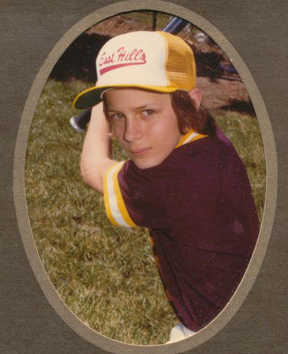
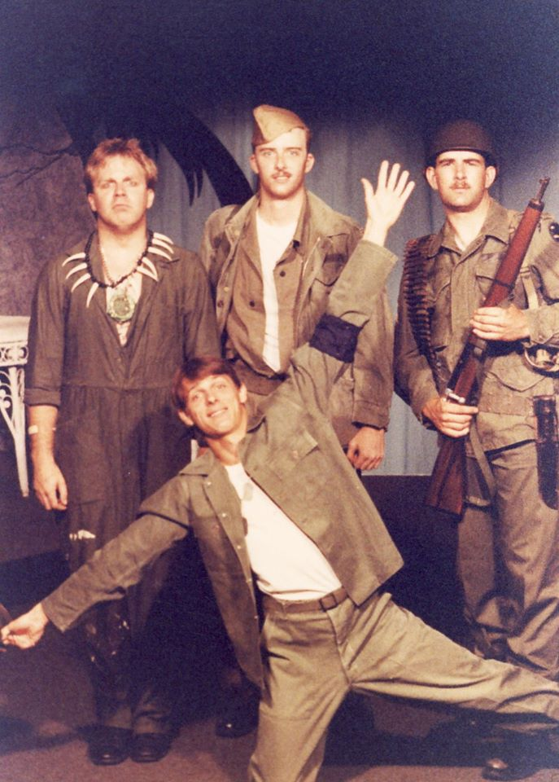
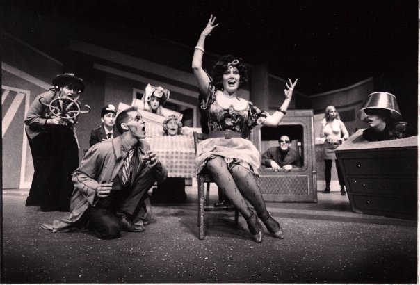
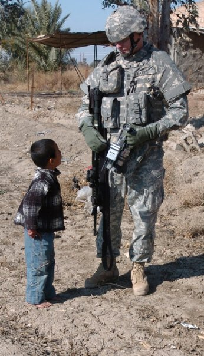
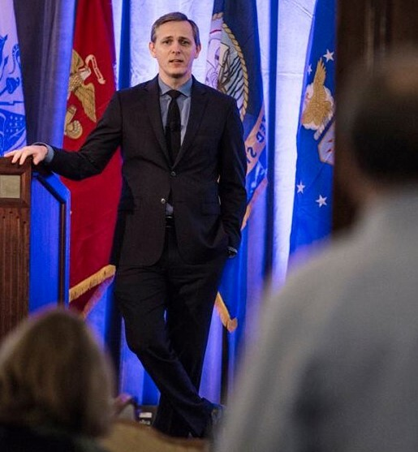

Early Years

I was born in San Jose, California, and spent most of life growing up in
cities up and down the California coast (with short stints in Oregon and
Colorado). I was a big sports fan when I was younger and played little league
baseball and participated in wrestling. When I was 12 years old, my family
and I settled back in the Silicon Valley area for good. While attending
Independence High School, I became involved in their drama program and
discovered what I thought was my future career.
Early Adulthood

After high school, I attended a local community college in the San Jose, while
also staying involved in area community theaters. I was cast in the chorus
of several musicals, to include South Pacific and Hello, Dolly. I eventually
entered the Theater Arts program at San Jose State University where I studied
all aspects of theater, from acting to set design to costume and make up.
Post-College

After college, I packed up everything I owned and blindly moved to New York
City with the plan of “becoming famous”. Of course, that is much easier said
than done. I did a few small, community productions, but never got that “big
break”. After six months or so, low on funds, I was forced to move back in
with my parents for a while (who had moved to Omaha, Nebraska). For the next
few years I worked in a hotel as I planned my next step. I had thought to
try my had at comedy in Chicago, but another opportunity presented itself to
me.
Military Career

On of my co-workers at the hotel wanted to join the Army but was too timid to
go to the recruiting office alone. So, I offered to go along with them. Once
there, the recruiter started talking with both of us about potential careers in
the military. One in particular interested me…broadcast journalism. After some
convincing, I eventually enlisted in the Army and began what ended up being a
22-year career.
From the Army to Now

After retiring from the Army in 2014, I moved to the Chicago area. My post military
career began in the nonprofit sector, where I worked with unemployed veterans to
help them land a job. I eventually moved onto a statewide nonprofit organization
that assisted veterans and their families throughout Illinois. A major family tragedy
in the Summer of 2019 caused me to re-evaluate my future. I decided to take some time
off from the workforce and go back to school…this time to study something just for fun.
Where I will go from here, I’m not sure yet. But I will figure it out as I move along.
{kind=link}
{kind=link}
{kind=link}
{kind=link}
{kind=link}